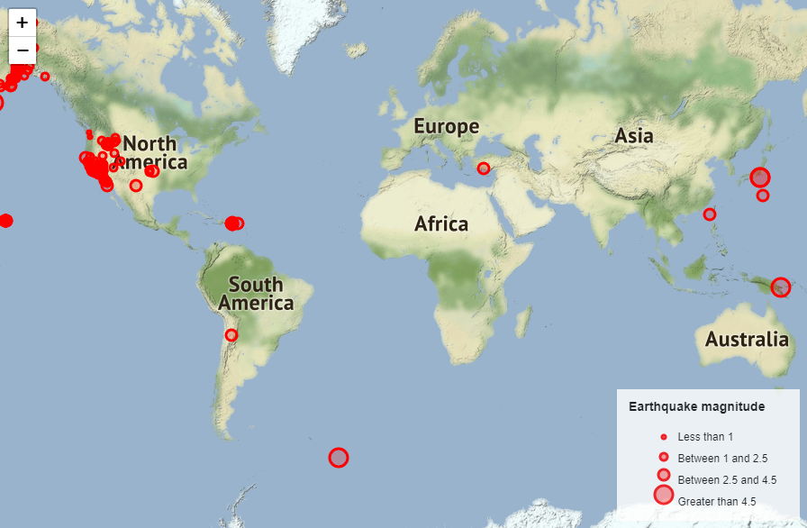
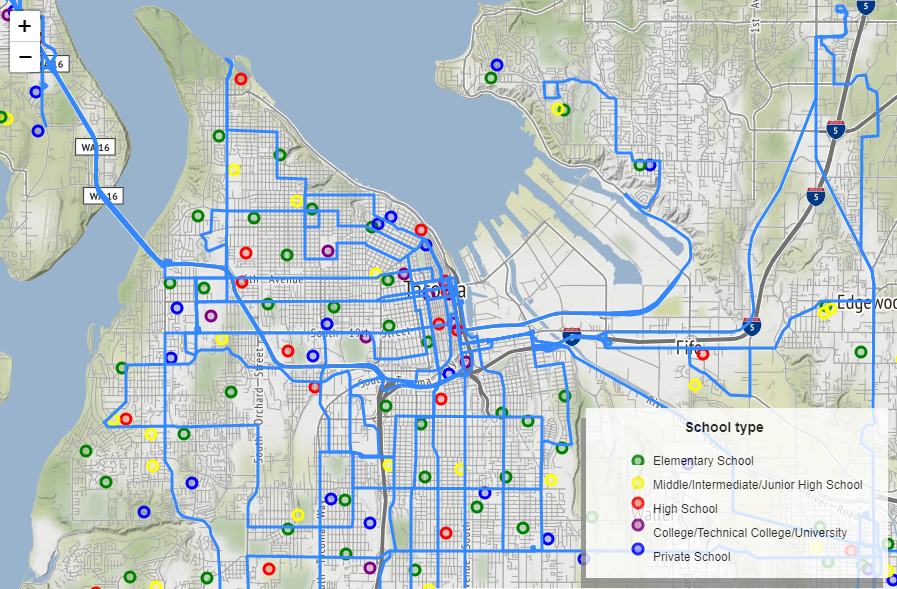
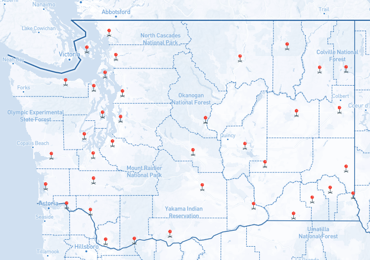
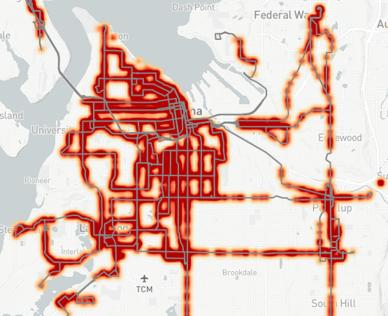
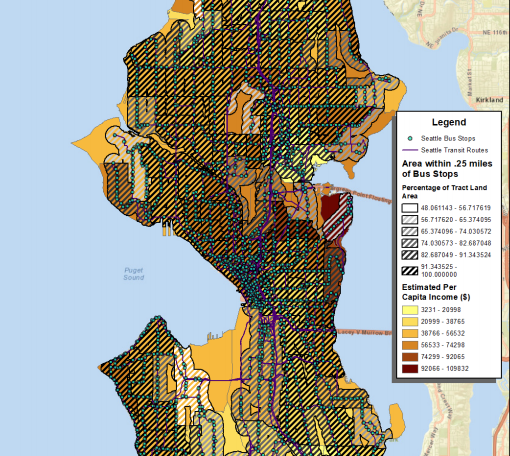

My Portfolio
These are all of the labs I have submitted for TGIS 503 during the Fall Quarter of 2020. I have also included my final project for GEOG 360, a class I took in my Junior year of undergrad in Spring 2017.

Image source: Wikimedia Commons

Our first lab involved us making a simple website that could be about whatever topic we chose. The goal was to get us used to writing HTML to make a website with multiple pages, as well as basic styling using CSS. I decided to make a very simple webpage about Mount Rainier, displaying various facts and information about our local mountain as well as the threat it poses.

The first part of our second lab had us follow an example to make a webmap showing earthquakes that had happened in the past 24 hours. This was our introduction to using Leaflet to load GeoJSON data on a functional map on a webpage.

The second part of Lab 2 required us to find two different sets of GeoJSON data and display them on the same map, borrowing most of the techniques we learned in the first part of this lab. We were also required to use different symbols to display at least one set of data. I chose to map out different schools and compare their proximity to local bus routes, with schools being colored based on their grade level. We were also required to incorporate at least one Leaflet plugin; in this case, I went with a legend.

Our third lab introduced us to the Mapbox API, which was more advanced than the Leaflet API we previously worked with. For this lab, we had to display two seperate maps on the same webpage, and use them to display different types of data. For the first map, I chose to map the mean centers of population for each county in Washington state, with each marker having a clickable popup showing the names of each county as well as the population and coordinates for the center point. The second map is a choropleth map showing the population of census tract in Pierce County. This lab was more difficult, as I kept having trouble with some of the data for the second map and had to change plans, and because Mapbox's documentation is admittedly not quite as good as Leaflet's.

Our fourth lab required us to display multiple pieces of related data across two maps and at least different APIS in order to tell a story. I chose to draw inspiration from my previous two labs and make a page comparing density of Pierce Transit bus stops to population. The first map is a Mapbox map displaying a heatmap of bus stops, while the second map is a Leaflet choropleth displaying the population of Pierce County census tracts overlaid on bus stops. I would've preffered to have mapped population density, but at the time could not figure out what the area of the census tracts were with the data I was using.

This project is actually not from this class, but is instead a final project I did for GEOG 360 in my Junior year of undergrad up in UW-Seattle back in Spring 2017. I am choosing to include it because I am fairly proud of it and also because it's where I got the inspiration for Lab 2 - Part 2 and Lab 4, as well as my capstone. Here I analyzed bus routes in Seattle did all sorts of geospatial analysis using ArcGIS, such as calculating the percentage of census tracts' area that was within walking distance of bus stops and comparing that to the average income of each tract.